library("tidyverse")
library("visualize") #functions to create graphs of probability distributions
knitr::opts_chunk$set(echo = TRUE)Hands-On Exploration of UDL Modalities
If you are planning on attending this workshop and participate live, I advise you to read only the pre-reading in advance.
Workshop Description
In this workshop, we will not only discuss UDL (universal design for learning) principles, but rather experience classroom exercises where the participants (students) are immersed in various ways to mathematically explore concepts and calculations and are then able express their own preferences in UDL modalities. These exercises are adapted from ideas from Choosing to See: A Framework for Equity in the Math Classroom by Pamela Seda and Kyndall Brown.
Pre-Reading
Audience members would perhaps like to read the following passages from Choosing to See by Pamela Seda and Kyndall Brown, and mentally give themselves time to ponder the ideas.
“The culturally relevant teacher, however, does not view knowledge as static, but rather as continuously re-created and shared by both teacher and student. In this approach, teachers should look for opportunities where they can play the dual roles of student and co-teacher. One way of making a class less teacher-centered is by striving to never say anything kids can say for themselves.” — page 29
“Because mathematics tends to be perceived as difficult, these negative stereotypes contribute to the social status, expert status, academic status, and peer status attributed to students. Further contributing to unequal status interactions is the idea that mathematics is static, genetic, and/or innate. Members of negatively stereotyped groups will more likely be perceived as incompetent or incapable when they make mistakes in class” — page 56
“Culturally relevant relationships are, by contrast, fluid, humane, and equitable. In culturally relevant classrooms, teachers and students co-construct academic and behavioral norms and hold each other accountable for maintaining those norms. Culturally relevant teachers encourage connections with all students, emphasize collaboration, and establish communities of learners. Students work on real-world activities and projects that foster interdependence and allow students to use their community-based knowledge to solve problems” — page 71
Teacher Notes
This workshop starts as a look at mental health data. In the first exercise, we use the survey data as the prior probability for calculations with the binomial distribution. In the second exercise, we expand our calculations to approximations with the normal distributions. Each exercise has participants split into groups for the jigsaw approach of active learning. The groups are given various views—verbal, algebraic, symbolic, visual—and present their approach to solving the calculations to their peers. Through the pair of exercises, each participant is immersed in two of the modalities and furthermore hears from their peers about the other approaches. Toward the end of the workshop, each participant ranks their modality preferences, and will possibility feel more optimistic and enthusiastic about solving mathematical tasks in their preferred modality. These exercises are adapted from ideas from Choosing to See: A Framework for Equity in the Math Classroom by Pamela Seda and Kyndall Brown.
Agenda
- Prompt 1 (breakout rooms)
- Prompt 1 (return to main room)
- Prompt 2 (breakout rooms)
- Prompt 2 (return to main room)
- discuss examples
- discuss culturally relevant teaching
Advice
- Each Jamboard has multiple pages
- Sharing screen speeds up discussions
- Choose a spokesperson for your group
- An answer is nice, but we will like to explore how to find answers
Scenario 1: Loneliness
The BBC launched the Loneliness Experiment on Valentine’s Day of 2018 and had over 55 thousand people worldwide respond to their survey. The table below shows the proportion of respondents who said that they feel lonely “often”. Let’s call the 16-24 age group “young adults”. Suppose that in similar study, we have a sample of 5 young adults.
Prompt 1
- What is the probability that at most two young adults did not respond as often lonely?
- What is the probability that at least one young adult responded as often lonely?
Group 1
- The probability that exactly zero young adults responded as often lonely is 0.0845
- The probability that exactly one young adult responded as often lonely is 0.2700
- `The probability that exactly two young adults responded as often lonely is0.3452
- The probability that exactly three young adults responded as often lonely is 0.2207
- The probability that exactly four young adults responded as often lonely is 0.0706
- The probability that exactly five young adults responded as often lonely is 0.0090
- The probability that exactly zero young adults did not respond as often lonely is 0.0090
- The probability that exactly one young adult did not respond as often lonely is 0.0706
- The probability that exactly two young adults did not respond as often lonely is 0.2207
- The probability that exactly three young adults did not respond as often lonely is 0.3452
- The probability that exactly four young adults did not respond as often lonely is 0.2700
- The probability that exactly five young adults did not respond as often lonely is 0.0845
Group 2
- \(\binom{5}{0}(0.39)^{0}(0.61)^{5} = 0.0845\)
- \(\binom{5}{1}(0.39)^{1}(0.61)^{4} = 0.2700\)
- \(\binom{5}{2}(0.39)^{2}(0.61)^{3} = 0.3452\)
- \(\binom{5}{3}(0.39)^{3}(0.61)^{2} = 0.2207\)
- \(\binom{5}{4}(0.39)^{4}(0.61)^{1} = 0.0706\)
- \(\binom{5}{5}(0.39)^{5}(0.61)^{0} = 0.0090\)
- \(\binom{5}{0}(0.61)^{0}(0.39)^{5} = 0.0090\)
- \(\binom{5}{1}(0.61)^{1}(0.39)^{4} = 0.0706\)
- \(\binom{5}{2}(0.61)^{2}(0.39)^{3} = 0.2207\)
- \(\binom{5}{3}(0.61)^{3}(0.39)^{2} = 0.3452\)
- \(\binom{5}{4}(0.61)^{4}(0.39)^{1} = 0.2700\)
- \(\binom{5}{5}(0.61)^{5}(0.39)^{0} = 0.0845\)
Group 3
dbinom(0,5,0.39)= 0.0845dbinom(1,5,0.39)= 0.2700dbinom(2,5,0.39)= 0.3452dbinom(3,5,0.39)= 0.2207dbinom(4,5,0.39)= 0.0706dbinom(5,5,0.39)= 0.0090dbinom(0,5,0.61)= 0.0090dbinom(1,5,0.61)= 0.0706dbinom(2,5,0.61)= 0.2207dbinom(3,5,0.61)= 0.3452dbinom(4,5,0.61)= 0.2700dbinom(5,5,0.61)= 0.0845
Group 4
visualize.binom(section = "bounded", stat = c(0,0),
size = 5, prob = 0.39,
strict = c(FALSE, FALSE))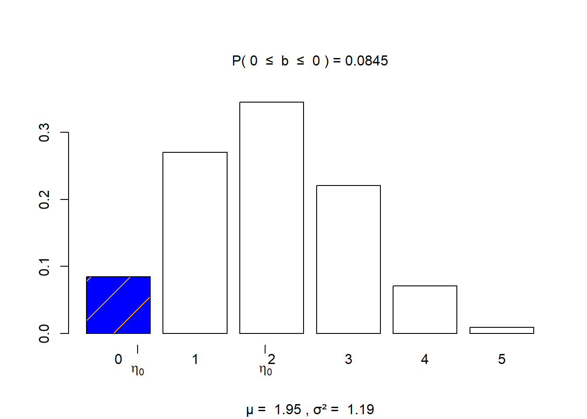
visualize.binom(section = "bounded", stat = c(1,1),
size = 5, prob = 0.39,
strict = c(FALSE, FALSE))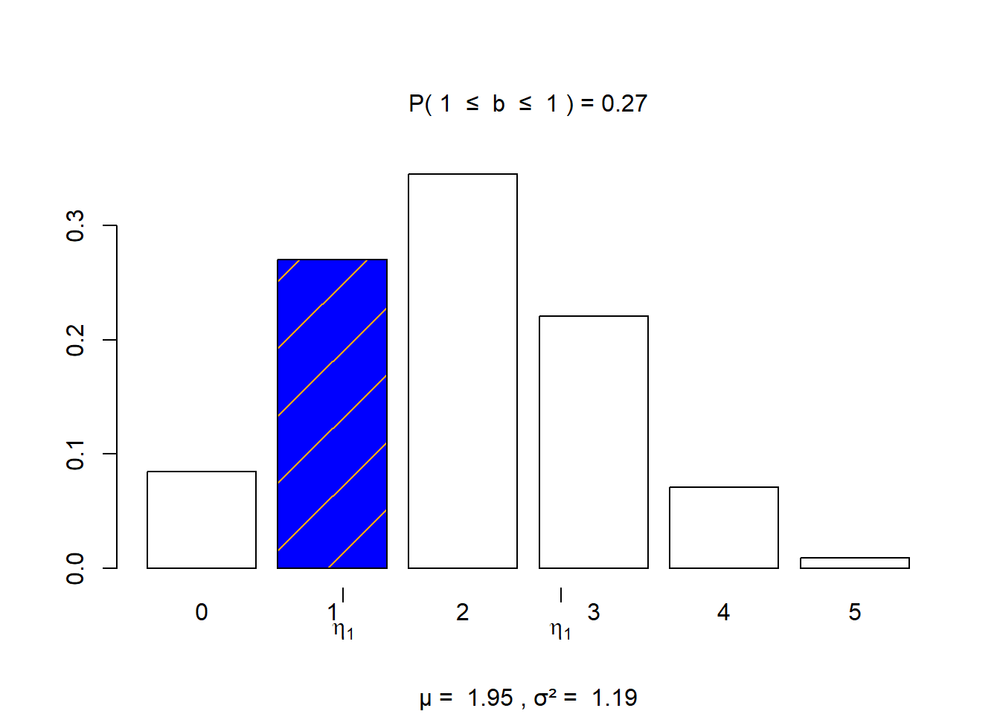
visualize.binom(section = "bounded", stat = c(2,2),
size = 5, prob = 0.39,
strict = c(FALSE, FALSE))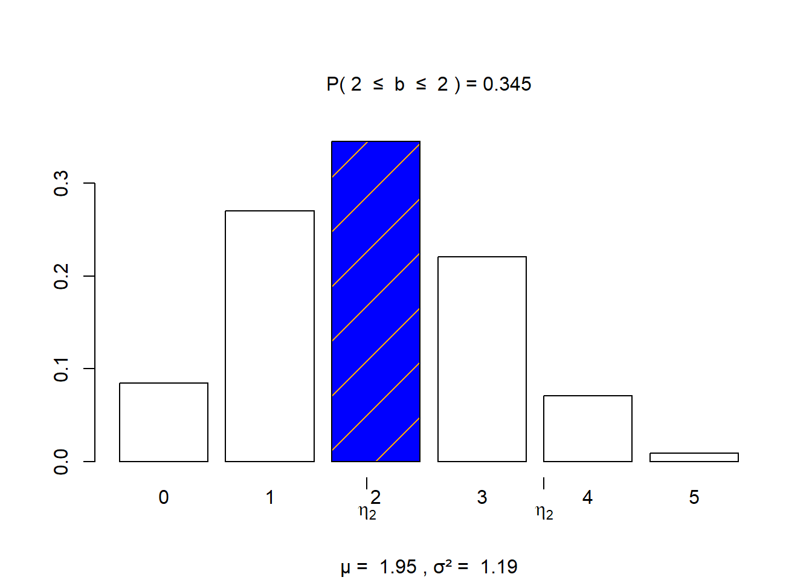
visualize.binom(section = "bounded", stat = c(3,3),
size = 5, prob = 0.39,
strict = c(FALSE, FALSE))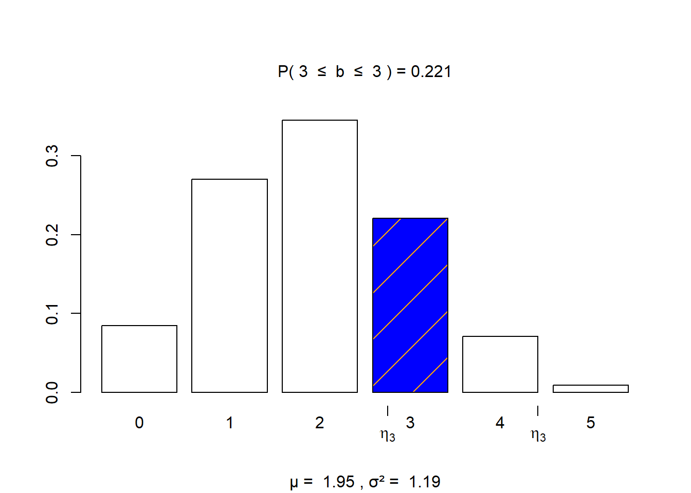
visualize.binom(section = "bounded", stat = c(4,4),
size = 5, prob = 0.39,
strict = c(FALSE, FALSE))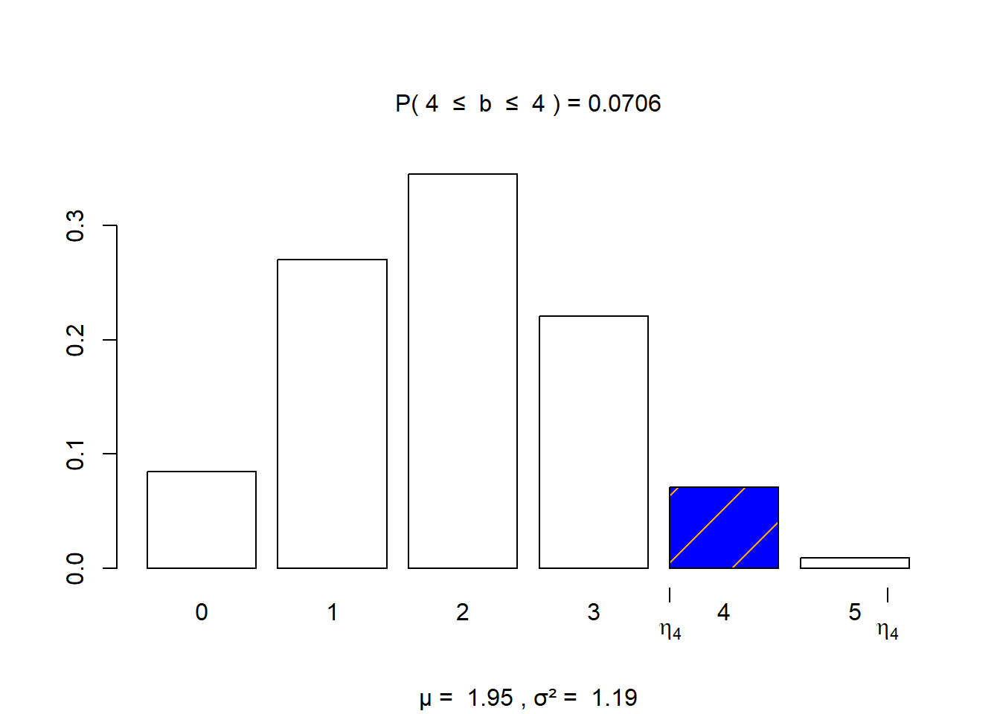
visualize.binom(section = "bounded", stat = c(5,5),
size = 5, prob = 0.39,
strict = c(FALSE, FALSE))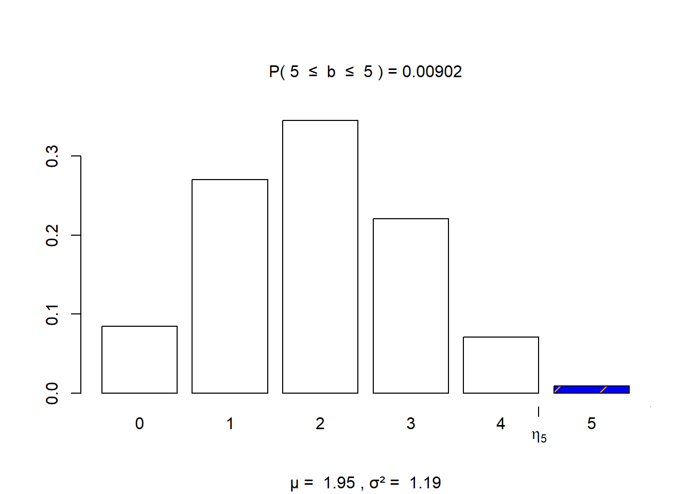
Passage 1
“The culturally relevant teacher, however, does not view knowledge as static, but rather as continuously re-created and shared by both teacher and student. In this approach, teachers should look for opportunities where they can play the dual roles of student and co-teacher. One way of making a class less teacher-centered is by striving to never say anything kids can say for themselves.” — page 29
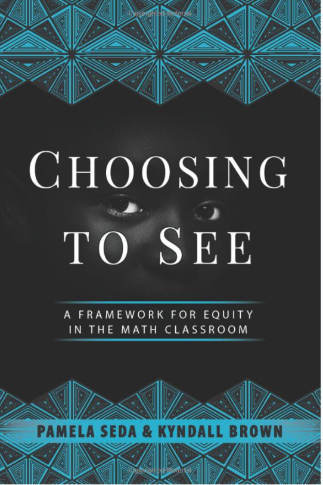
Rule of Four
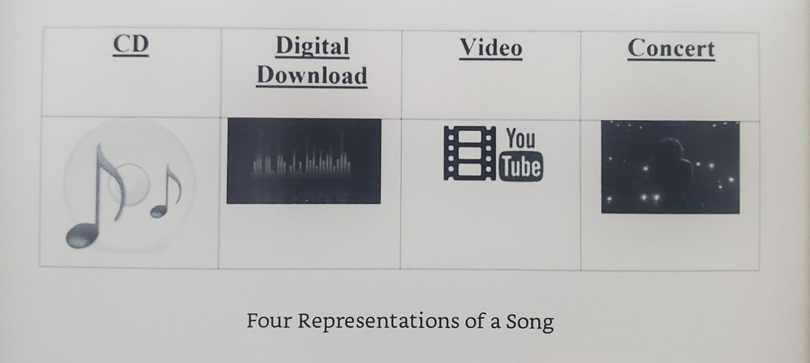
Rule of Four
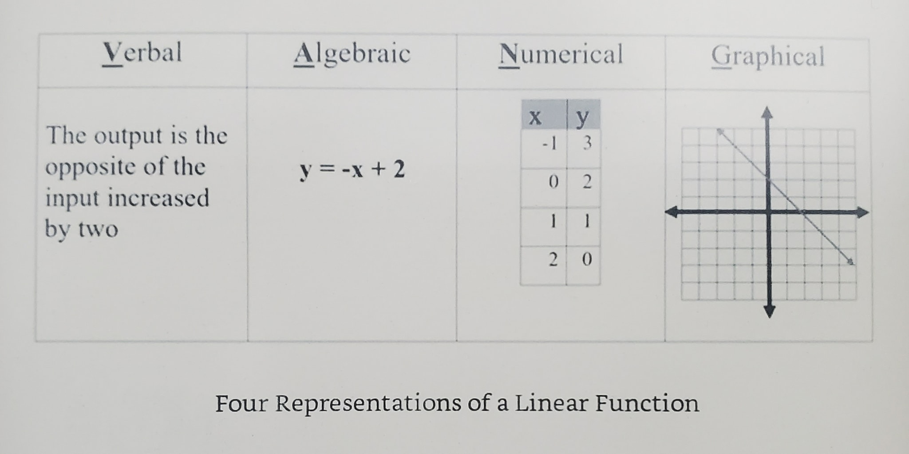
Scenario 2: MCV
The mean corpusular volume or mean cell volume (MCV) is the average volume of a red blood cell. The following information was gathered, adapted, heavily rounded from the Wikipedia page, and should not constitute medical advice. For these mathematical examples, assume that the mean MCV is \(\mu = 90\) fL/cell with a standard deviation of \(\sigma = 5\) fL/cell and that we can apply the normal distribution based on numerous blood tests.
Prompt 2
Suppose that a patient has a blood test performed, and their results included an MCV reading of 97 fl/cell. Using the information presented to your group as a guide, should the doctor be alarmed?
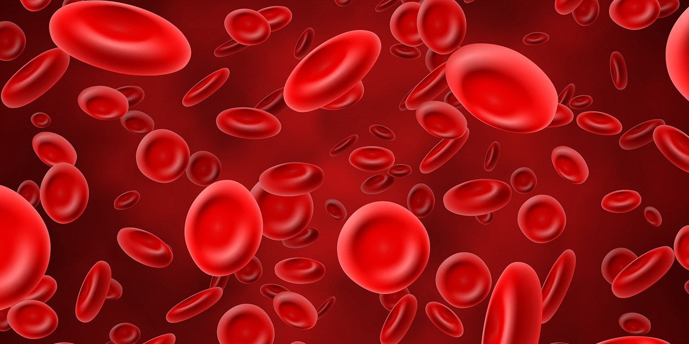
Group 4
You can refer to this website: https://emedicine.medscape.com/article/2085770-overview
Group 3
\[\displaystyle\frac{1}{5\sqrt{2\pi}} \int_{80}^{100} \! e^{-0.5(\frac{x - 90}{5})^{2}} \, dx \approx 0.9545\]
Group 2
pnorm(75,90,5)= 0.0013pnorm(80,90,5)= 0.0228pnorm(85,90,5)= 0.1587pnorm(90,90,5)= 0.5000pnorm(95,90,5)= 0.8413pnorm(100,90,5)= 0.9772pnorm(105,90,5)= 0.9987
Group 1
visualize.norm(stat = c(80, 100), mu = 90, sd = 5, section = "bounded")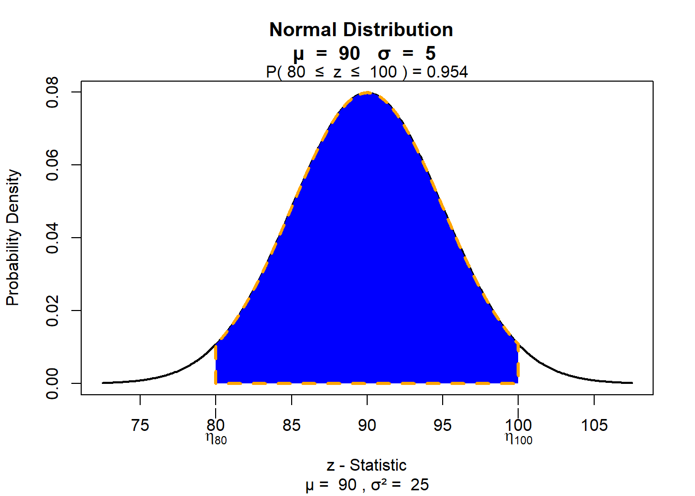
Passage 2
“Because mathematics tends to be perceived as difficult, these negative stereotypes contribute to the social status, expert status, academic status, and peer status attributed to students. Further contributing to unequal status interactions is the idea that mathematics is static, genetic, and/or innate. Members of negatively stereotyped groups will more likely be perceived as incompetent or incapable when they make mistakes in class” — page 56
Solutions
Prompt 1
- What is the probability that at most two young adults did not respond as often lonely?
pbinom(2, 5, 0.61)[1] 0.3003084- What is the probability that at least one young adult responded as often lonely?
1 - pbinom(0, 5, 0.39)[1] 0.9155404Prompt 2
Suppose that a patient has a blood test performed, and their results included an MCV reading of 97 fl/cell. Using the information presented to your group as a guide, should the doctor be alarmed?
I intended the second set of exercises to have more open-ended discussion (i.e. no “right or wrong” answer).
Reference Range
- MedScape says that the reference range for MCV is from 80 to 96 fL/cell. Find the probability with
visualize.normthat a randomly selected blood test will fall within the reference range. This is also known as normocytic size for MCV.
visualize.norm(stat = c(80,96), mu = 90, sd = 5, section = "bounded")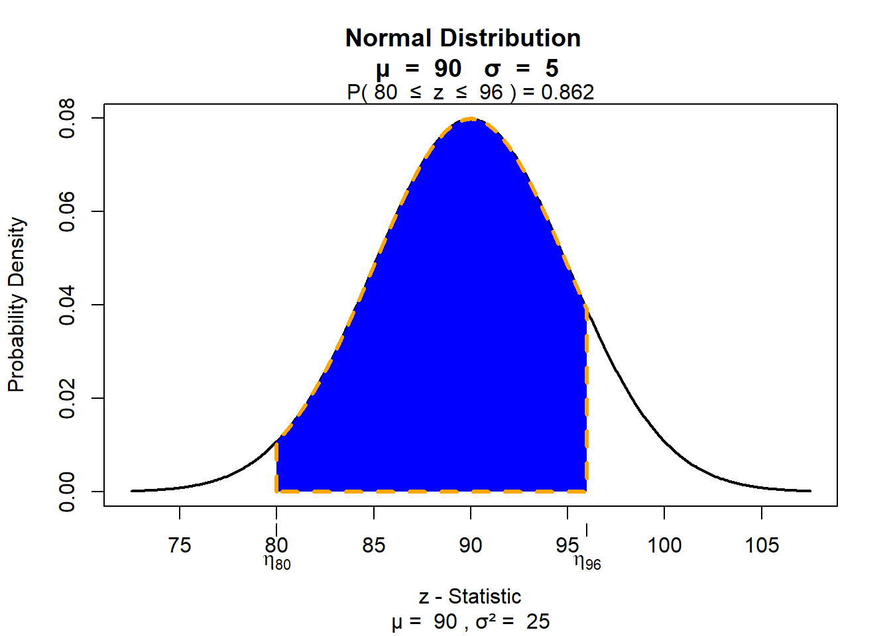
Macrocytic Anemia
- Macrocytic or pernicious anemia describes high levels of MCV, and that may be caused by a nutrient deficiency (for instance, deficiency of vitamin B12). Find the probability with
visualize.normthat a randomly selected blood test will report an MCV value above 96 fL/cell.
visualize.norm(stat = 96, mu = 90, sd = 5, section = "upper")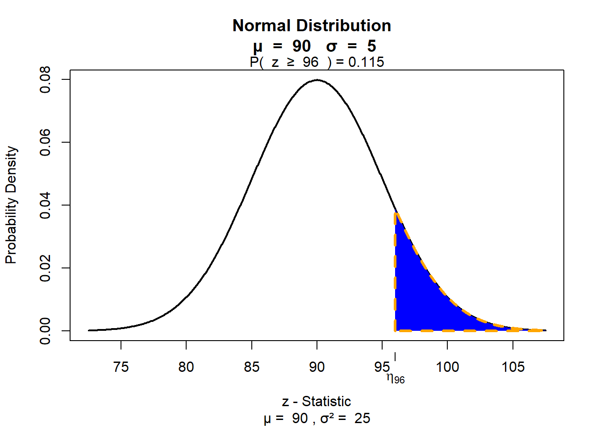
Microcytic Anemia
- Microcytic anemia describes low levels of MCV and could be caused by diseases such as thalassemia. If microcytic anemia is diagnosed at MCV levels below 80 fL/cell, find the probability with
visualize.normthat a randomly selected blood test will suggest microcytic anemia.
visualize.norm(stat = 80, mu = 90, sd = 5, section = "lower")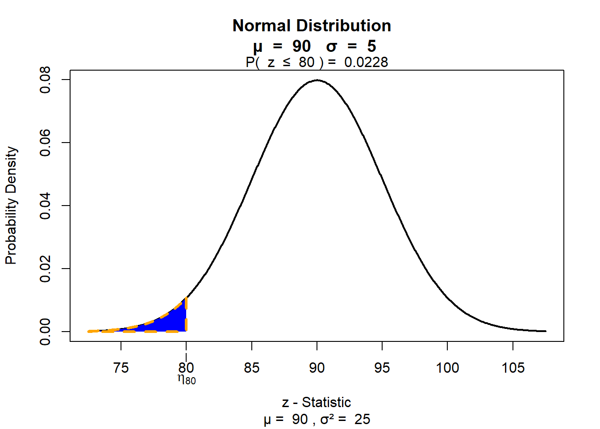
Passage 3
“Culturally relevant relationships are, by contrast, fluid, humane, and equitable. In culturally relevant classrooms, teachers and students co-construct academic and behavioral norms and hold each other accountable for maintaining those norms. Culturally relevant teachers encourage connections with all students, emphasize collaboration, and establish communities of learners. Students work on real-world activities and projects that foster interdependence and allow students to use their community-based knowledge to solve problems” — page 71
Open Discussion
Culturally relevant teaching